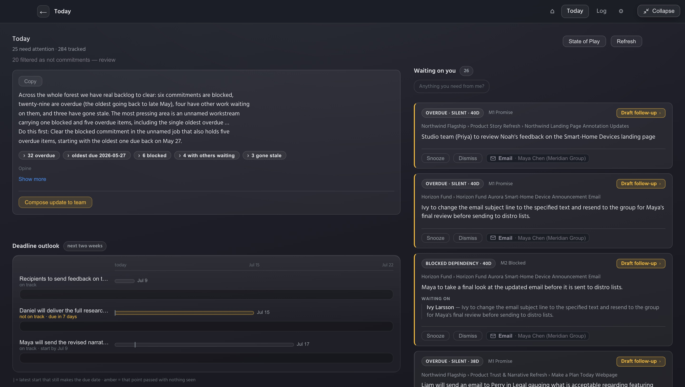
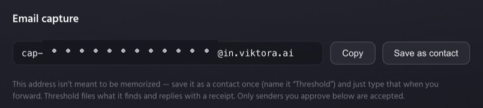
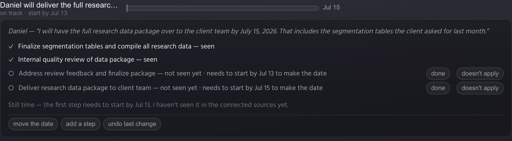
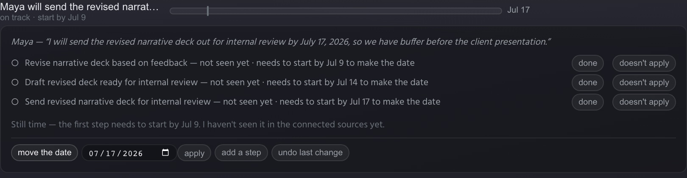
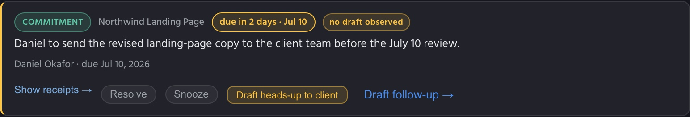
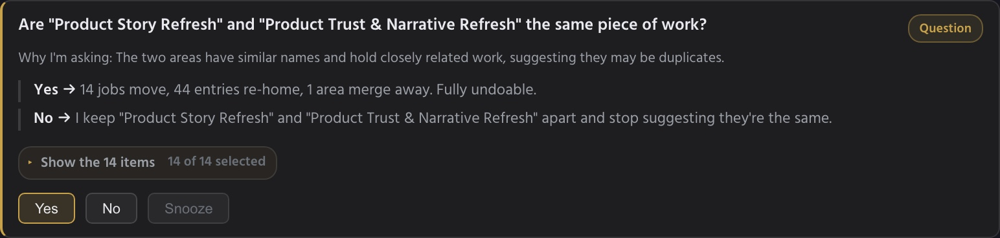

Someone on your team made a promise three weeks ago — in a thread, a meeting, a chat you were barely part of. Nobody put it on a list. Someone had to ask. Threshold exists so that never happens again.
Ask for a beta invite
You're accountable for work you don't personally do. The promises that sink you don't live in your task tracker — they live in side threads, forwarded decks, and meeting notes. For example, someone says, "I should have something by the 30th." Search can't find a date you don't know exists. A list can't hold a promise nobody wrote down. And every system that could is homework: somebody has to file, tag, and groom it, forever — which is exactly the job nobody was doing the day the deadline slipped.
Every workspace gets a private capture address, and connects to the sources your work already lives in. Threshold files every commitment it finds — who promised what, by when, in their exact words — and replies with a receipt. Nothing invented; if it finds nothing, the receipt says so.

Today opens with every promise due in the next two weeks and who owns it. The bigger ones get a worked-back plan — the latest date each step can start and still make the deadline. Threshold watches your connected sources: when a step's work shows up, it's checked off — seen — and the plan recomputes. When a date passes with nothing seen, the item turns amber before it's late, not after.

Every plan is correctable in place — mark a step done, rule it out, move the date, undo any of it. When Threshold isn't sure, it asks instead of guessing — and your answers teach it.

When something starts drifting, you see it early — while there's still time to reshuffle, pull someone in, or deliver part now and buy room for the rest. If a heads-up is the right call, one tap stages a short, no-blame note that waits in your outbox. Nothing sends itself.

You've tried the boards, the Gantt charts, the color-coded lists with everyone's name tagged on them. You groom them for an hour and nobody looks again. Every one of them asks the same thing: that somebody keep it current, forever — the job that never gets done. Threshold doesn't ask. Forward what matters and it does the filing — the emails, the meeting notes, the running log of decisions and commitments — organized and kept current on its own. When it isn't sure, it asks you one small question instead of handing you a system to manage.

Threshold only sees what you forward or connect. Every claim it makes carries a receipt — the exact words, the source document, the date. When it can't see enough to judge, it says so instead of guessing.
Threshold works for one person from day one — you don't need your team, your IT department, or anyone's permission to start. We're letting people in in small waves.